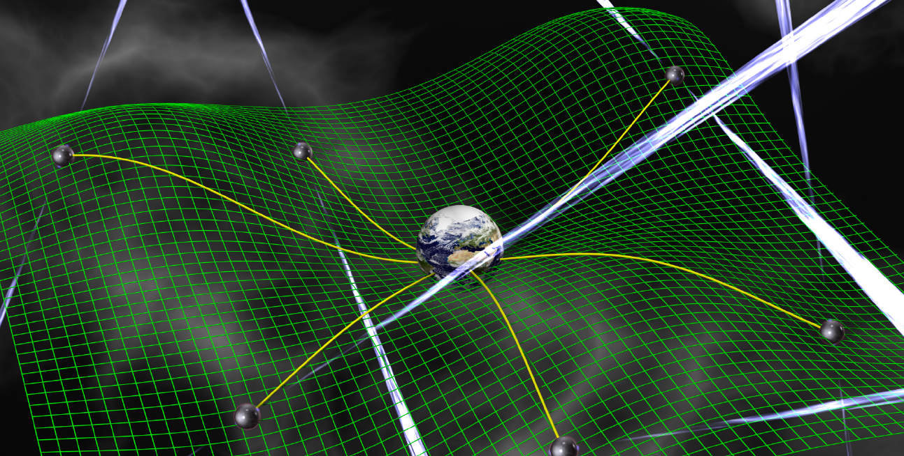

A survey for radio transients and pulsars in the Galactic Centre
Image credit: David Champion
What I spend my time writing about
These are the second-most dense object in the Universe, beaten only by black holes. They resist gravitational collapse through neutron-degeneracy pressure, having masses similar to the Sun but packed into a space equivalent to a city. Rapidly rotating neutron stars act like dynamos, generating powerful radiation that is beamed along their magnetic field axis. Image credit: Tonia Klein, NANOGrav NSF Physics Frontier Center
Teasing out patterns or signals from data, inferring the odds with which certain hypotheses are favoured by data, and quantifying our certainty or ignorance of the properties of the physical Universe are all the realm of statistical inference. The techniques we need are rich, diverse and fun. Full disclosure, I am a Bayesian. Image: Bayes' Theorem at offices of HP Autonomy
The North American Nanohertz Observatory for Gravitational waves is a collaborative enterprise of many universities and radio facilities, involving ~100 researchers, and performing precision timing of more than 70 MSPs. We are currently generously funded as an NSF Physics Frontier Center. US facilities like the Arecibo Radio Telescope and the Green Bank Telescope are important for our ongoing successes.
The IPTA is the collaborative union of NANOGrav, the European Pulsar Timing Array (EPTA), the Parkes Pulsar Timing Array (PPTA), and emerging regional PTAs in South Africa, India, and China. Together, we have observed over 60 MSPs pulsars for more than 15 years.
The Laser Interferometer Gravitational-wave Observatory made the first detection of GWs on September 14th, 2015. There are detectors in Livingston, Louisiana and Hanford, Washington, and have since been joined by the Virgo detector in Italy. LIGO detects black holes that are a few tens the mass of the Sun, and systems with neutron stars. The emerging catalog of detections is fostering a new era of compact-object demography. Image credit: LIGO Caltech

The Laser Interferometer Space Antenna is a joint ESA-NASA mission project for launch in ~2034. Three satellites will orbit the Sun at separations of ~2.5 million kilometers from one another. The mission will access the millihertz band of GW frequencies, where many Milky Way white-dwarf binary systems and massive black hole mergers await. These black holes are less massive than what PTAs can see, but LISA will be able to perform exquisite fundamental tests of gravity.
Image credit: David Champion

In this article, I report on the detection of free precession in the magnetar XTE J1810-197, initiated by an X-ray and radio burst after more than 10 years of radio inactivity. I show that the precession decays very rapidly, which calls into question the theories of the repeating fast radio bursts of extragalactic origin coming from freely precessing magnetars. I also model the deformation of the magnetar, which agrees with the prediction of deformation caused by its internal magnetic field.
Image credit: G. Desvignes
In this article, I present a survey for new pulsars and fast radio bursts using the Nançay radio telescope and the dedicated instrumentation I developed in 2010-2011. To organize the 2,000 h of observations allocated and analyze the 60 TB of data resulting from the program, I used Big Data techniques (SQL and NoSQL databases, HPC Hercules hosted at MPCDF Garching) and machine learning to sort through the results. The main result is the detection of a millisecond pulsar J2205+6012 with excellent prospects for inclusion in “Pulsar Timing Array” programs and the detection of the gravitational wave background.
Image credit: JP Letourneur